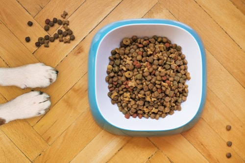
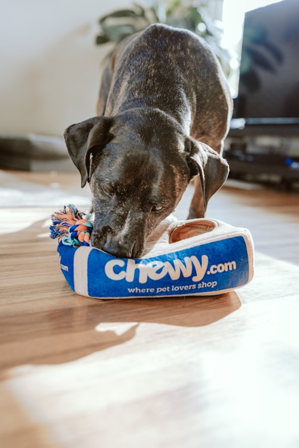

Gut Microbiome Profiling
Deep-dive analysis of your cat's gut bacteria composition. Understand which strains support digestion, immunity, and mood.
Learn more →PurrBiome combines cutting-edge microbiome science with AI-powered analytics to help you track your cat's gut health, wellness metrics, and longevity — so every purr lasts a little longer.

Gut Diversity Score: 8.4 / 10 Last updated 2 days ago
Three powerful modules work together to give you a complete picture of your feline companion's internal health.

Deep-dive analysis of your cat's gut bacteria composition. Understand which strains support digestion, immunity, and mood.
Learn more →
Seamlessly log meals, litter box habits, playtime, and mood. Spot trends before they become problems with intuitive dashboards.
Learn more →
Our machine learning models correlate microbiome data with lifestyle patterns to deliver personalized, actionable recommendations.
Learn more →